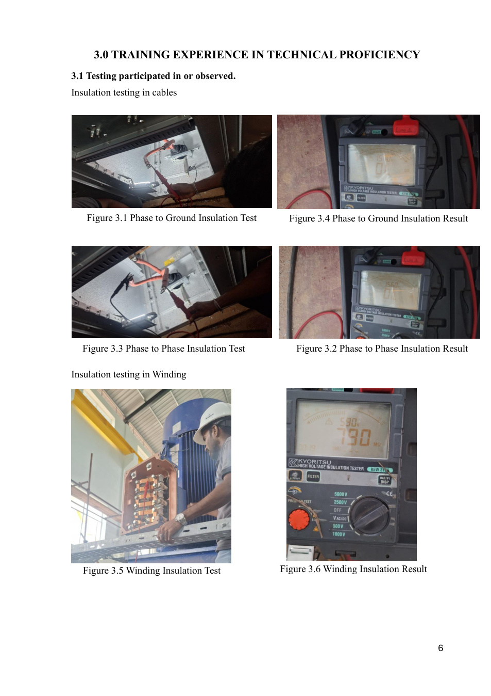

June 2024 - August 2024
Electrical, Instrumentation & SCADA Trainee
Zhongnan SZSG JH Joint Venture Company - Ambathale Water Treatment Plant Project
- Gained exposure to pump house operations, SCADA-based monitoring, flow and pressure monitoring, remote monitoring and log keeping.
- Observed insulation resistance testing for cables and motor windings, pump vibration checks, cooling water checks and surge vessel maintenance.
- Documented instrumentation such as pressure transmitters, differential pressure transmitters, ultrasonic level transmitters, Prosonic sensors and AUMA actuators.
- Developed understanding of motor troubleshooting, relay operations, control panels, VFD fundamentals and HSE practices.